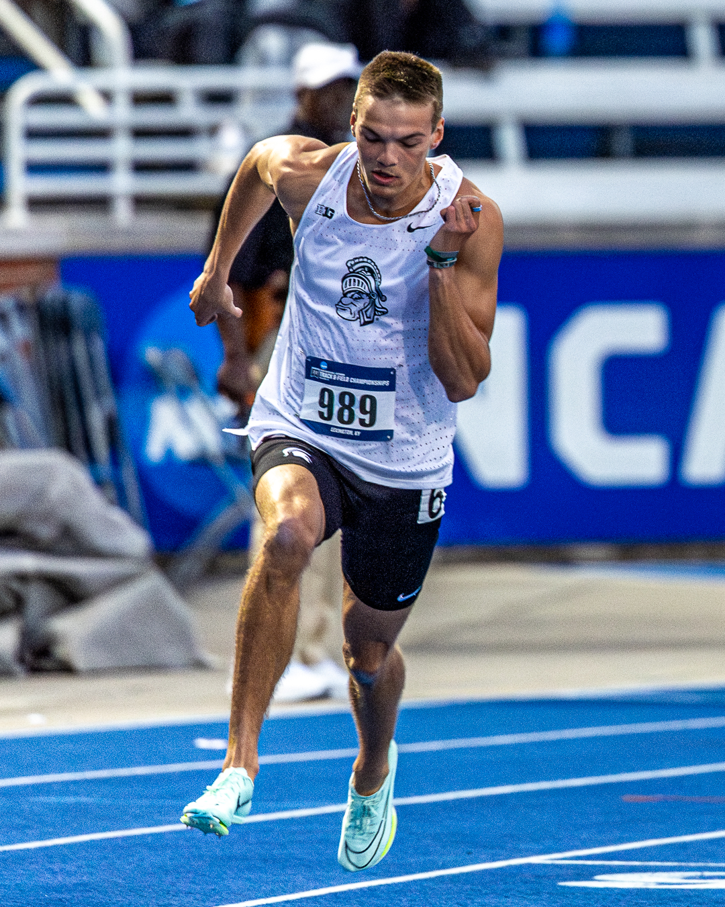

My Track and Field Journey
by Noah Sage
Hello! My name is Noah Sage, an incoming senior at Michigan State University majoring in Information Science. As a member of the track and field team, I have spent hours on end training and competing my hardest. Here, I share all of my experiences and thoughts from being a D1 athlete.
Training Schedule for Sprinters
| Day | Workout | Details |
|---|---|---|
| Monday | Speed Work | 5x60m sprints at 90% effort, 3 min rest between reps |
| Tuesday | Strength Training | Squats, Deadlifts, Bench Press - 3 sets of 6-8 reps |
| Wednesday | Endurance Training | 6x200m runs at 70% effort, 2 min rest between reps |
| Thursday | Recovery | Light Jog and Stretching, Foam Rolling/ice bath |
| Friday | Power Training | Cleans, box jumps, Plyometrics - 3 sets of 4-6 reps |
| Saturday | Technique Drills | Starts, handoffs , Form Running |
| Sunday | Rest | Complete rest or light activity/20min bike or run |
Training and practice are crucial for achieving peak performance. As sprinters, we focus on building speed, strength, and endurance through a variety of drills and exercises. Stay tuned for more updates on training plans and other things such as nutrition!
| Date | Milestone |
|---|---|
| 1965 | Sprinting times |
| 200m | Usain Bolt |